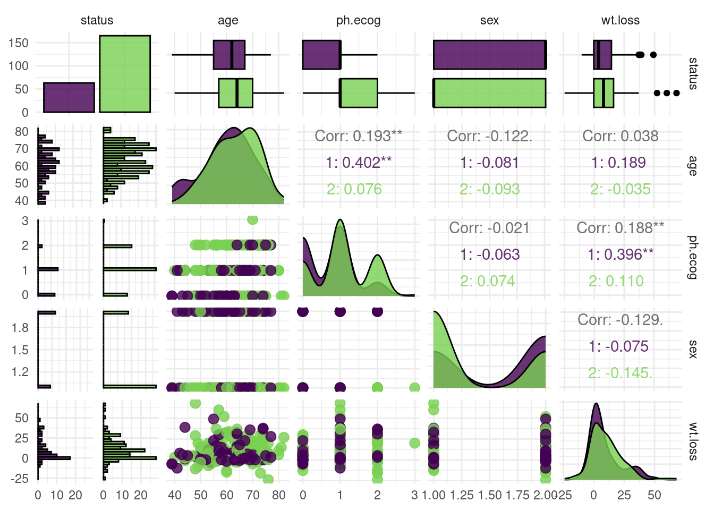
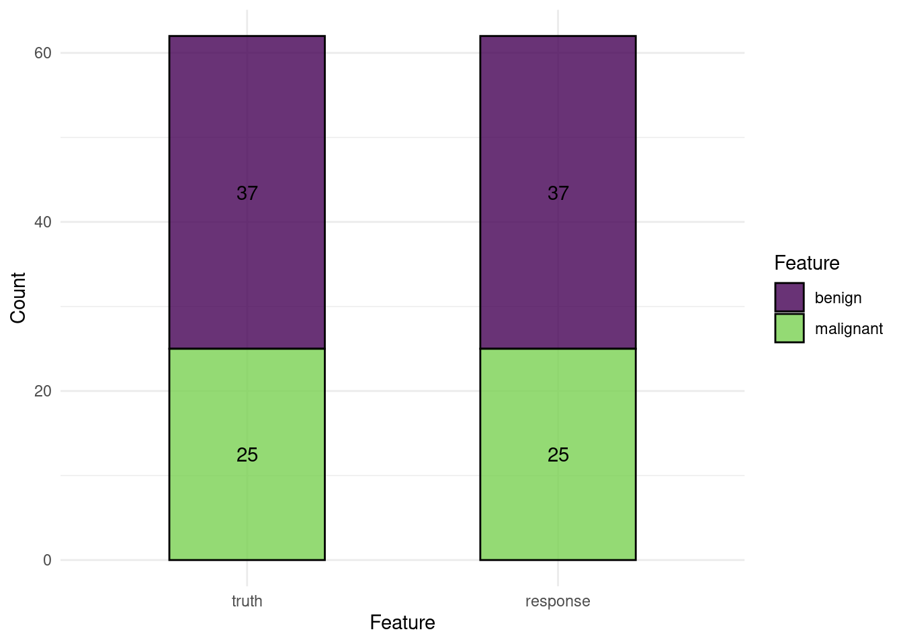
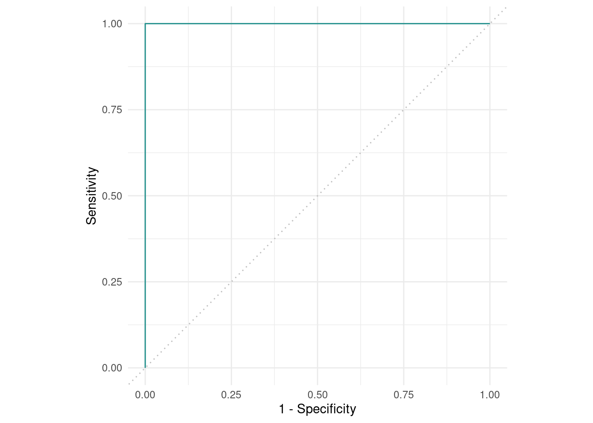
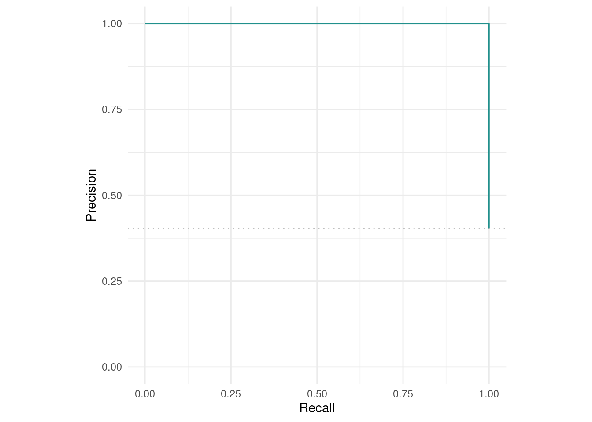

library(R6)
Foo = R6Class()
foo = Foo$new()Introduction
mlr3 (Machine Learning in R) 패키지와 생태계는 R 언어에서 분류 (classification), 회귀 (regression), 기타 머신러닝 작업들을 수행할 수 있도록 도와주는 포괄적, 객체 지향적, 확장 가능한 프레임워크입니다.
mlr3 는 여러 머신러닝 알고리즘들을 통합하여 하나의 통일된 인터페이스로 제공함으로써 머신러닝 작업을 더 적절하게 수행할 수 있게끔 도와줍니다.
mlr3 는 R 에 존재하는 caret, tidymodels, Python의 scikit-learn과 마찬가지로 더욱 유연한 머신러닝 플랫폼을 제공하는 것을 목표로 하고 있습니다.
mlr3가 어떻게 작동하는지 빠르게 파악하고 싶으시다면, mlr3 cheatsheets을 살펴보시기 바랍니다.
mlr3verse는 mlr3의 생태계로써, 머신러닝을 위한 R 패키지들의 집합체로 이루어져 있습니다. mlr3 패키지에서는 머신러닝을 위한 기본적인 코드들을 제공하고, 추가적인 학습 알고리즘, 파라미터 튜닝, 피처 선택 등은 확장 패키지들을 통해 이용할 수 있습니다.

mlr3 생태계는 R의 R6와 data.table을 기반으로 만들어졌습니다. R6는 객체지향 (object orientation)을 위해, data.table은 데이터를 저장하고 작동시키기 위해 사용되었습니다.
mlr3의 원활한 사용을 위해, 두 패키지의 기초를 살펴보도록 합시다.
R6
R6는 객체지향 프로그래밍 (OOP)을 위한 R의 최근 패러다임 중 하나입니다. R6는 S3와 같이 R에 존재하던 기존의 객체지향성의 단점을 해결하는것이 특징입니다. 아마 다른 프로그래밍 언어에서 객체 지향 개념을 다루어 보셨다면, R6가 더 익숙하게 느껴질 것입니다.
R6에서 객체(object)는 R6Class() 생성자 객체와 더불어 $new()메소드를 통해 생성됩니다.
예를 들어 보겠습니다.
이 객체들은 자신들의 필드 안에서 변환 가능하도록 압축된 상태를 띄고 있는데, 우리는 이 객체들에 $ 기호를 통해 접근할 수 있습니다.
필드 뿐만 아니라, 객체들이 갖고 있는 메소드를 통해 각 객체의 상태를 파악하고 정보를 검색하거나, 객체의 내부 상태를 변경할 수 있습니다. 예를 들어 mlr3 의 학습모델(learner) 의 $train() 메소드를 통해, 모델을 학습된 상태로 변경할 수 있고, 이를 통해 예측을 할 수 있게 됩니다.
Note
R6 객체의 내부 요소는 다음과 같이 부릅니다.
$field: 필드, 정보$method(): 메소드, 특정 동작 실행
R6 객체들은 각각의 환경(environment)로서, 참조 특성 (reference semantics)을 갖습니다. 예를 들어, foo2 = foo 를 실행할 시, foo2 는 foo가 복사된 것은 아니지만, 하나의 객체를 참조하고 있는 것입니다. 따라서, foo$bar = 3 을 실행할 시, foo2$bar 역시 3이 됩니다.
객체를 복사할 경우 $clone() 메소드와 deep = TRUE 인자를 사용해야 합니다.
foo2 = foo$clone(deep=TRUE)library(mlr3verse)
Tip
R6에 대해 더 자세히 알고 싶다면, R6 vignettes, 특히 introduction부분을 참고하세요. 포괄적인 R6의 정보를 얻고 싶다면, Advanced R의 R6 챕터를 참고하세요.
mlr3의 필수 활용요소
Sugar functions
대부분의 mlr3 객체들은 sugar function으로 불리는 간편한 함수들을 제공합니다. 다시 말해, sugar function은 원래의 코드에 대한 단축키(shortcut)로서 사용자가 입력해야 하는 코드를 줄여줍니다. 예를 들어 lrn("regr.rpart") 는 LearnerRegrRpart$new() 의 sugar 버전입니다.
Dictionaries
mlr3는 러너(learners)나 태스크(tasks) 객체들을 저장하기 위해 dictionary 구조를 사용합니다. dictionary 구조는 key와 value로 이루어져 있어 key와 value를 연관시켜주는데, 이는 실제 사전의 단어와 단어의 설명과 같다고 이해하시면 됩니다.
dictionary는 연관된 객체들을 묶어 나열하고 검색하기 쉽게 하기 위해 사용됩니다. 예를 들어 특정 학습모델을 검색할 때, mlr_learners dictionary에 원하는 러너(key)를 입력하면 검색이 가능합니다.
예를 들면 다음과 같습니다.
require(mlr3)
mlr_learners$get('classif.rpart')<LearnerClassifRpart:classif.rpart>: Classification Tree
* Model: -
* Parameters: xval=0
* Packages: mlr3, rpart
* Predict Types: [response], prob
* Feature Types: logical, integer, numeric, factor, ordered
* Properties: importance, missings, multiclass, selected_features,
twoclass, weights또한 as.data.table(mlr3_learners) 모든 학습 모델의 정보를 확인할 수도 있습니다.
mlr3viz
mlr3viz는 mlr3 생태계 안에서 시각화를 담당하는 패키지입니다. ggplot2의 theme_minimal()을 적용시킨 동일한 배경의 그래프들을 생성합니다. mlr3viz는 ggplot2 를 기반으로 하고 있으며, fortify와 autoplot 라는 확장 패키지를 통해 예측, 학습모델, 벤치마크 객체 등 mlr3의 결과물들을 시각화하는 데 사용됩니다. mlr3viz에서 가장 많이 사용되는 것은 autoplot()으로, 객체의 타입에 따라 그래프의 출력 결과가 결정됩니다.
Basics
Tasks
태스크(task)은 데이터와 머신러닝 문제들을 정의한 메타데이터를 갖고 있는 객체입니다. 예를 들면 머신러닝의 분류에서 타겟 피처의 이름이 메타 데이터 입니다.
한마디로, 태스크는 우리가 활용하는 기본 데이터와 머신러닝을 위해 필요한 데이터들을 담아둔 정보 등이 포함된 객체입니다.
이 메타 데이터는 사용자가 모덜이 학습될 때 예측 타겟을 다시 지정해줄 필요 없도록 태스크와 함께 작동하게 됩니다.
Note
Task와 Learner 등 영어로 지정된 단어들은 따로 번역하지 않고, 소리 그대로 “태스크”와 “러너”로 부르겠습니다.
내장 태스크
mlr3에는 mlr_tasks라고 하는 R6 Dictionary 를 통해 미리 지정된 머신러닝 태스크를 제공하고 있습니다.
mlr_tasks<DictionaryTask> with 19 stored values
Keys: bike_sharing, boston_housing, breast_cancer, german_credit, ilpd,
iris, kc_housing, moneyball, mtcars, optdigits, penguins,
penguins_simple, pima, sonar, spam, titanic, usarrests, wine, zoomlr_tasks에 내장된 태스크를 가져오기 위해선, tsk() 함수와 불러오고자 하는 태스크의 이름을 입력하면 됩니다.
task_mtcars <- tsk("mtcars")
task_mtcars<TaskRegr:mtcars> (32 x 11): Motor Trends
* Target: mpg
* Properties: -
* Features (10):
- dbl (10): am, carb, cyl, disp, drat, gear, hp, qsec, vs, wt특정 태스크에 대해 보다 많은 정보가 필요하다면, help()메소드를 이용하시면 됩니다.
task_mtcars$help()
Tip
R을 사용하셨던 분들이라면 위와 같은 구조의 코드가 낯설 것입니다. 보통 도움말을 보기 위해선 help()나 ?를 이용했을테니까요.
task_mtcars$help() 와 같은 구조가 바로 R6 객체 구조입니다. Introduction에서 간단히 소개했었죠? 앞으로 mlr3를 배우며, 계속 사용하게 될 것입니다.
task_sonar <- tsk('sonar')
split <- partition(task_sonar, ratio=.7)
Tip
mlr3에서 기본적으로 제공하는 태스크 이외에, Openml.org1 [@vanschoren2014] , mlr3oml 을 통해 수많은 데이터셋을 이용할 수 있습니다.
library(mlr3oml)
mlr3oml::list_oml_data()외부 데이터 태스크로 변환
mlr3에서 제공하는 데이터가 아닌, 외부의 데이터셋을 mlr3 패키지와 사용하려면 아래와 같이 데이터셋을 태스크로 변환해야 합니다. 예를 들어, survival 패키지의 lung 데이터셋을 mlr3의 태스크 객체로 변환한다면, 아래와 같이 진행할 수 있습니다.
library(survival)
library(data.table)
task_lung = as_task_classif(
as.data.table(lung)[,.(age, sex, wt.loss, ph.ecog,status)],
target = "status",
id = "lung")
task_lung<TaskClassif:lung> (228 x 5)
* Target: status
* Properties: twoclass
* Features (4):
- dbl (4): age, ph.ecog, sex, wt.loss
Tip
태스크 생성자인 as_task_regr()과 as_task_classif()는 각각 머신러닝의 회귀와 분류를 수행하기 위한 태스크를 만드는 함수입니다.
외부의 데이터를 태스크로 변환할 때, UTF8 이름을 따르지 않는 경우, 머신러닝 학습과정에서 오류가 발생합니다. 예를 들면,
Task 'lung' has missing values in column(s) 'ph.ecog', 'wt.loss', but learner 'classif.ranger' does not support this따라서 make.names() 함수를 이용해 데이터의 열 이름을 변경하는 것을 권장합니다.
library(mlr3viz)
autoplot(task_lung, type = "pairs")
데이터 살펴보기
태스크 객체는 테이블 형태의 데이터와 함께, 메타 데이터를 포함하고 있습니다. 예를 들면 행과 열의 개수, 피처(feature) 변수, 타겟 변수와 각 변수의 데이터유형 등을 확인할 수 있습니다.
이런 메타 데이터들은 field를 통해 확인이 가능합니다.
task_lung$nrow[1] 228task_lung$ncol[1] 5피처와 타겟변수의 이름은 각각 $feature_names 와 $target_names 에 저장되어 있습니다. 여기서 target 은 머신러닝을 통해 예측하고자 하는 변수를 의미합니다.
task_lung$feature_names[1] "age" "ph.ecog" "sex" "wt.loss"task_lung$target_names[1] "status"한편 태스크 안에 들어있는 데이터는 data.table 객체로, $data() 메소드를 통해 확인할 수 있습니다.
task_lung$data() status age ph.ecog sex wt.loss
1: 2 74 1 1 NA
2: 2 68 0 1 15
3: 1 56 0 1 15
4: 2 57 1 1 11
5: 2 60 0 1 0
---
224: 1 77 1 1 3
225: 1 39 0 1 -5
226: 1 75 2 2 5
227: 1 66 1 1 1
228: 1 58 1 2 0$data() 메소드 안에서 rows와 cols를 통해 원하는 데이터를 확인할 수 있습니다.
task_lung$data(rows=1:10, cols="status") status
1: 2
2: 2
3: 1
4: 2
5: 2
6: 1
7: 2
8: 2
9: 2
10: 2태스크를 data.table 객체로 바꾼다면, 데이터에 있는 모든 변수를 확인할 수도 있습니다.
summary(as.data.table(task_lung)) status age ph.ecog sex wt.loss
1: 63 Min. :39.00 Min. :0.0000 Min. :1.000 Min. :-24.000
2:165 1st Qu.:56.00 1st Qu.:0.0000 1st Qu.:1.000 1st Qu.: 0.000
Median :63.00 Median :1.0000 Median :1.000 Median : 7.000
Mean :62.45 Mean :0.9515 Mean :1.395 Mean : 9.832
3rd Qu.:69.00 3rd Qu.:1.0000 3rd Qu.:2.000 3rd Qu.: 15.750
Max. :82.00 Max. :3.0000 Max. :2.000 Max. : 68.000
NA's :1 NA's :14 태스크 변환자(Mutators)
머신러닝을 수행하며, 행과 열들을 선택하는 경우가 종종 있습니다. 예를 들면 train-test split을 위해 행을 선택하는 경우, 모델링에 넣을 피처들을 선택하는 경우가 있겠죠.
mlr3의 태스크는 행을 선택하는 $filter(), 열을 선택하는 $select() 를 이용해 원하는 조건의 데이터를 추출할 수 있습니다.
한 가지 주의해야 할 것이 있습니다. $select()와 $filter()는 변환자이기 때문에, 기존의 태스크를 수정하게 됩니다. 다시 말해, 처음에 있던 원래 데이터를 바꿔버리는 것이죠.
task_iris <- tsk("iris")
task_iris$select(c("Sepal.Length","Petal.Width"))
task_iris$filter(2:4)
task_iris$data() Species Petal.Width Sepal.Length
1: setosa 0.2 4.9
2: setosa 0.2 4.7
3: setosa 0.2 4.6이를 방지하기 위해서는 $clone() 메소드를 이용해 새로운 태스크로 복사한 뒤에 행이나 열을 선택하는 작업하시면 됩니다.
task_iris_copy <- task_iris$clone()
task_iris_copy$filter(2)
task_iris_copy$data() Species Petal.Width Sepal.Length
1: setosa 0.2 4.9task_iris$data() Species Petal.Width Sepal.Length
1: setosa 0.2 4.9
2: setosa 0.2 4.7
3: setosa 0.2 4.6task_iris_copy는 task_iris를 복사한 뒤, 2번째 행을 $filter() 했지만, task_iris의 데이터는 아무 변화가 없는 것을 확인할 수 있습니다.
Learner
러너는 클래스는 널리 알려진 많은 머신러닝 패키지들을 통일된 형태로 제공합니다. 태스크와 마찬가지로 mlr_learners dictionary를 통해 확인할 수 있습니다.
러너는 머신러닝 모델을 학습(train)하고 예측하는 역할을 수행합니다. 태스크에서는 외부 데이터도 태스크로 만들 수 있었던 것과 달리, 러너는 mlr3에서 지원하는 것만 사용할 수 있습니다. mlr3에서 제공하는 러너들은 다음과 같습니다.
as.data.table(mlr_learners) |> head() key label task_type
1: classif.cv_glmnet <NA> classif
2: classif.debug Debug Learner for Classification classif
3: classif.featureless Featureless Classification Learner classif
4: classif.glmnet <NA> classif
5: classif.kknn <NA> classif
6: classif.lda <NA> classif
feature_types
1: logical,integer,numeric
2: logical,integer,numeric,character,factor,ordered
3: logical,integer,numeric,character,factor,ordered,...
4: logical,integer,numeric
5: logical,integer,numeric,factor,ordered
6: logical,integer,numeric,factor,ordered
packages
1: mlr3,mlr3learners,glmnet
2: mlr3
3: mlr3
4: mlr3,mlr3learners,glmnet
5: mlr3,mlr3learners,kknn
6: mlr3,mlr3learners,MASS
properties
1: multiclass,selected_features,twoclass,weights
2: hotstart_forward,missings,multiclass,twoclass
3: featureless,importance,missings,multiclass,selected_features,twoclass
4: multiclass,twoclass,weights
5: multiclass,twoclass
6: multiclass,twoclass,weights
predict_types
1: response,prob
2: response,prob
3: response,prob
4: response,prob
5: response,prob
6: response,prob러너의 기본 형태는 Learner입니다. Learner로 시작하는 다양한 러너들이 존재합니다. mlr3의 러너들은 mlr3learners와 mlr3extralearners패키지를 통해 확인 가능합니다.
mlr3learners::LearnerClassifLogReg<LearnerClassifLogReg> object generator
Inherits from: <LearnerClassif>
Public:
initialize: function ()
loglik: function ()
clone: function (deep = FALSE)
Private:
.train: function (task)
.predict: function (task)
Parent env: <environment: namespace:mlr3learners>
Locked objects: TRUE
Locked class: FALSE
Portable: TRUE러너의 sugar function은 lrn() 입니다.
Danger
mlr3의 러너를 실행하기 위한 패키지가 없다면 아래와 같은 경고 메시지가 뜹니다.
Warning: Package 'ranger' required but not installed for Learner 'classif.ranger패키지를 설치해주시면 간단히 해결됩니다.
install.packages("ranger")learner_rf <- lrn('classif.ranger', predict_type='prob')
learner_rf<LearnerClassifRanger:classif.ranger>
* Model: -
* Parameters: num.threads=1
* Packages: mlr3, mlr3learners, ranger
* Predict Types: response, [prob]
* Feature Types: logical, integer, numeric, character, factor, ordered
* Properties: hotstart_backward, importance, multiclass, oob_error,
twoclass, weights각 러너들은 아래의 메타데이터를 갖고 있습니다.
$feature_types: 피처들의 유형$packages: 모델을 학습시키고 예측하기 위해 필요한 패키지들$properties: 해당 러너가 갖고 있는 추가적인 특성. 예를 들어 importance 특성이 있다면 학습 후, 각 피처들의 importance를 추출할 수 있습니다.$predict_types: 해당 러너를 활용해 가능한 예측 유형입니다. 분류 유형의 러너는 response와 prob을 출력합니다.
모든 러너들은 두 단계에 걸쳐 진행됩니다.
학습 (Training):
$train()메소드를 통해 학습시키고자 하는 태스크를 전달합니다.예측 (Prediction):
$predict()메소드에 학습 때 사용하지 않은 데이터를 사용합니다. 학습 데이터를 기반으로 훈련된 모델이 새로운 데이터를 받아 예측값을 반환합니다.
Warning
러너가 학습되지 않았다면 $predict() 실행 시 에러가 발생합니다.
train: 학습시키기
앞서 말했듯이, mlr3에서는 러너에 태스크를 투입하여 모델을 학습시킵니다. 머신러닝에서는 태스크를 투입하기 전, 훈련에 사용할 데이터와 예측에 사용할 데이터를 나누는 것이 일반적입니다.
mlr3 에서는 $partition() 메소드를 이용해 두 개의 데이터로 나눌 수 있습니다. 기본값은 전체 데이터의 67%를 훈련에, 나머지 33%를 예측에 사용합니다. 물론 이 비율은 ratio 인자 (범위: 0~1)를 통해 변경 가능합니다.
task_breast <- tsk("breast_cancer")
splits <- partition(task_breast, ratio = 0.7)데이터를 나눠줬으니, 이제 모델을 학습시켜보도록 하겠습니다. 위에서 선언한 랜덤포레스트 러너에서 $train() 메소드를 실행시킵니다. 태스크와 row_ids에는 split 중 train에 해당하는 부분을 입력합니다.
learner_rf$train(task_breast,
row_ids = split$train)
learner_rf$modelRanger result
Call:
ranger::ranger(dependent.variable.name = task$target_names, data = task$data(), probability = self$predict_type == "prob", case.weights = task$weights$weight, num.threads = 1L)
Type: Probability estimation
Number of trees: 500
Sample size: 146
Number of independent variables: 9
Mtry: 3
Target node size: 10
Variable importance mode: none
Splitrule: gini
OOB prediction error (Brier s.): 0.03908646 학습을 시킨 이후, $model 필드를 통해 학습된 결과를 확인할 수 있습니다. 어떤 하이퍼파라미터가 사용되었는지 등의 정보를 확인할 수 있습니다.
각 러너들은 하이퍼파라미터들을 조정해줄 수 있습니다. 러너들의 파라미터를 확인하는 명령어는 다음과 같습니다.
learner_rf$param_set id class lower upper
1: alpha ParamDbl -Inf Inf
2: always.split.variables ParamUty NA NA
3: class.weights ParamUty NA NA
4: holdout ParamLgl NA NA
5: importance ParamFct NA NA
6: keep.inbag ParamLgl NA NA
levels nlevels is_bounded special_vals
1: Inf FALSE <list[0]>
2: Inf FALSE <list[0]>
3: Inf FALSE <list[0]>
4: TRUE,FALSE 2 TRUE <list[0]>
5: none,impurity,impurity_corrected,permutation 4 TRUE <list[0]>
6: TRUE,FALSE 2 TRUE <list[0]>
default storage_type tags
1: 0.5 numeric train
2: <NoDefault[3]> list train
3: list train
4: FALSE logical train
5: <NoDefault[3]> character train
6: FALSE logical train현재 학습에 사용된 하이퍼 파라미터들은 values 필드에 저장되어있습니다.
learner_rf$param_set$values$num.threads
[1] 1위와 같이 하이퍼 파라미터에 접근한 뒤, 기존의 값을 원하는 값으로 변경하거나, 새로운 하이퍼파라미터에 값을 설정해줄 수 있습니다.
learner_rf$param_set$values$num.threads = 10
learner_rf$param_set$values$num.trees = 20
learner_rf$param_set$values$num.threads
[1] 10
$num.trees
[1] 20또는 lrn() 함수로 러너를 생성할 때, 원하는 하이퍼파라미터를 설정해줄 수 있습니다.
learner_rf <- lrn('classif.ranger', num.trees= 30)
learner_rf$param_set$values$num.threads
[1] 1
$num.trees
[1] 30learner_rf$train(task_breast, row_ids = split$train)
learner_rf<LearnerClassifRanger:classif.ranger>
* Model: ranger
* Parameters: num.threads=1, num.trees=30
* Packages: mlr3, mlr3learners, ranger
* Predict Types: [response], prob
* Feature Types: logical, integer, numeric, character, factor, ordered
* Properties: hotstart_backward, importance, multiclass, oob_error,
twoclass, weights변경된 파라미터가 적용된 것을 확인할 수 있습니다.
Note
하이퍼 파라미터에 대한 자세한 설명은 하이퍼파라미터 튜닝에서 더 자세히 다루도록 하겠습니다.
predict: 예측하기
모델 학습이 완료되었다면, 예측값을 만들어볼 수 있습니다. split의 test 를 이용해 $predict() 메소드를 실행합니다.
prediction <- learner_rf$predict(task_breast,
row_ids = split$test)
prediction<PredictionClassif> for 62 observations:
row_ids truth response
1 benign benign
5 benign benign
8 benign benign
---
199 benign benign
205 malignant malignant
208 malignant malignant예측값을 살펴보니, 예측값이 범주로 나타났습니다. 만약 범주에 대한 예측 확률값을 구하고 싶을 경우, lrn()의 predict_type을 prob으로 조정해주면 됩니다.
learner_rf <- lrn("classif.ranger",
predict_type="prob")
learner_rf$train(task_breast,
row_ids = split$train)
prediction <- learner_rf$predict(task_breast,
row_ids = split$test)
prediction<PredictionClassif> for 62 observations:
row_ids truth response prob.malignant prob.benign
1 benign benign 0.0005555556 0.999444444
5 benign benign 0.0219841270 0.978015873
8 benign benign 0.0126650794 0.987334921
---
199 benign benign 0.0000000000 1.000000000
205 malignant malignant 0.9960761905 0.003923810
208 malignant malignant 0.9960428571 0.003957143prediction 객체에서는 $confusion 을 이용해 confusion matrix를 확인할 수 있습니다.
prediction$confusion truth
response malignant benign
malignant 25 0
benign 0 37우리가 만든 모델이 내놓은 예측값에 대한 시각화를 진행해줄 수 있습니다. mlr3viz 패키지의 autoplot() 기능을 이용해주면 됩니다.
autoplot()에서 type을 어떻게 지정해주는지에 따라 예측값에 시각화가 다르게 나타납니다.
library(mlr3viz)
autoplot(prediction)
위의 그림은 test 데이터의 실제 target 값과 머신러닝 모델이 예측한 target을 비교한 값입니다.
그 외에도 분류 계열의 모델에는 AUROC(type="roc" )와 AUPRC(type="prc") 등을 시각화할 수 있습니다.
# install.packages("precrec")
autoplot(prediction, type="roc")
autoplot(prediction, type="prc")

Evaluation: 성능 평가
성능 평가는 머신러닝 모델링 과정에서 중요한 단계입니다. 앞서 예측 부분에서 예측값을 시각화로 표현했습니다. 그와 더불에 mlr3에서는 msr() 함수를 이용해 다양한 성능 지표들을 계산하고 비교할 수 있습니다. mlr_measures 딕셔너리를 보면 계산 가능한 지표들이 나와있습니다.
예를 들어, 분류(classification) 모델에 대한 지표들을 살펴보면 다음과 같습니다.
mlr_measures$keys("classif") [1] "classif.acc" "classif.auc" "classif.bacc"
[4] "classif.bbrier" "classif.ce" "classif.costs"
[7] "classif.dor" "classif.fbeta" "classif.fdr"
[10] "classif.fn" "classif.fnr" "classif.fomr"
[13] "classif.fp" "classif.fpr" "classif.logloss"
[16] "classif.mauc_au1p" "classif.mauc_au1u" "classif.mauc_aunp"
[19] "classif.mauc_aunu" "classif.mbrier" "classif.mcc"
[22] "classif.npv" "classif.ppv" "classif.prauc"
[25] "classif.precision" "classif.recall" "classif.sensitivity"
[28] "classif.specificity" "classif.tn" "classif.tnr"
[31] "classif.tp" "classif.tpr" 모델의 성능을 계산하기 위한 지표는 한 가지만 사용할 수 있고, 여러 가지를 사용할수도 있습니다.
measure <- msr("classif.auc")
measures <- msrs(c("classif.auc","classif.auc"))모든 성능 지표들은 예측값과 test 데이터의 실제 값의 차이를 통해 수치화된 값입니다. 이 말은 모델의 성능을 평가하기 위해선, 예측값을 비교하기 위한, 모델 학습에 사용되지 않은 실제값이 필요하다는 것입니다.
이제, Measure 객체 중 하나인 classif.acc를 통해 위에서 만든 랜덤포레스트 모델의 성능을 평가해보도록 하겠습니다. 지표(measure)를 생성한 뒤, 모델의 예측값 객체(prediction)의 $score() 메소드에 넘겨주면 해당 지표의 성능이 평가됩니다.
measure <- msr("classif.acc")
measure<MeasureClassifSimple:classif.acc>: Classification Accuracy
* Packages: mlr3, mlr3measures
* Range: [0, 1]
* Minimize: FALSE
* Average: macro
* Parameters: list()
* Properties: -
* Predict type: responseprediction$score(measure)classif.acc
1
Note
$score()는 measure 없이 사용될 수 있습니다. 이럴 경우, 분류의 경우 기본값인 분류오차(classif.ce)가, 회귀는 평균제곱오차(regr.mse)가 적용됩니다.
$score()를 이용해 여러 종류의 성능 지표를 한 번에 계산하는 것도 가능합니다. 예를 들어, 민감도(classif.sensitivity)와 특이도(classif.specificity)를 한번에 계산할 경우,
measures <- msrs(c("classif.sensitivity","classif.specificity"))
prediction$score(measures)classif.sensitivity classif.specificity
1 1 뿐만 아니라, mlr3에서는 예측 모델의 품질을 정량화하는 지표로도 모델을 평가할 수 있습니다. 예를 들어, 학습하는 시간과 예측하는 시간을 평가하기 위해선
measures <- msrs(c("time_train", "time_predict"))
prediction$score(measures,learner = learner_rf) time_train time_predict
0.032 0.014 참고로, 위처럼 학습시간과 예측 시간을 평가하기 위해선 학습된 러너를 $score()에 입력해주어야 합니다.
한편, 일부 지표들은 스스로 하이퍼파라미터를 가지고 있습니다. 대표적인 예로 selected_features 지표가 있습니다. 이 지표는 “selected_features” 속성이 있는 러너에만 사용 가능한 지표로서, 모델이 학습 시 사용한 피처에 대한 정보를 제공해줍니다. 이런 지표의 경우, $score() 에 태스크와 러너를 추가로 입력해주어야 합니다.
task_boston <- tsk("boston_housing")
splits <- partition(task_boston)
learner_rpart <- lrn("regr.rpart")
learner_rpart$train(task_boston, splits$train)
prediction <- learner_rpart$predict(task_boston, splits$test)
measure <- msr("selected_features")
prediction$score(measure, task = task_boston, learner = learner_rpart)selected_features
1 selected_features 는 선택된 피처의 수를 정규화해줄 수 있는 하이퍼파라미터를 설정할 수 있습니다.
measure <- msr("selected_features", normalize=T)
prediction$score(measure, task=task_boston, learner = learner_rpart)selected_features
0.05555556